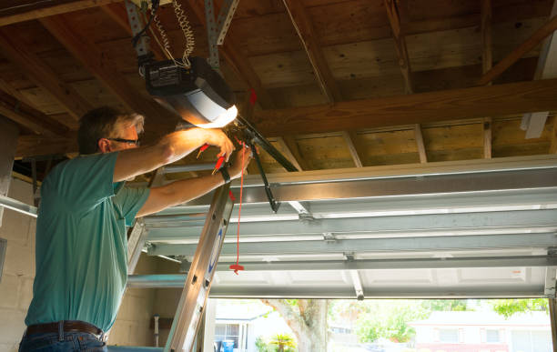

Trusted garage door repair in Texas Tx. Quality service with quick turnaround for all your door issues.
Click Here To Call Us (888) 964-1837Experiencing garage door opener troubles in Texas Tx? Trust us for quick and professional repairs. Contact us today for top-notch service!
Call Us Now (888) 964-1837Need garage door spring replacement in Texas Tx? We offer fast, reliable service to keep your door in top shape. Call us now for prompt assistance!
Call Us Now (888) 964-1837Professional garage door panel replacement in Texas Tx. We offer quality panels and expert installation for a perfect fit. Contact us now for a seamless repair!
Call Us Now (888) 964-1837Expert garage door track repair in Texas Tx. We ensure smooth operation with professional fixes and adjustments. Call today for reliable and fast service!
Call Us Now (888) 964-1837Need garage door sensor repair in Texas Tx? We provide quick fixes to ensure your sensors are functioning perfectly. Call us now for professional repair services!
Call Us Now (888) 964-1837Need garage door cable repair in Texas Tx? Our technicians offer efficient solutions to restore your door’s functionality. Call today for expert service and quick repairs!
Call Us Now (888) 964-1837Quick garage door remote programming in Texas Tx. Our experts set up your remote for seamless operation. Contact us today for efficient and professional programming services!
Call Us Now (888) 964-1837Need garage door installation in Texas Tx? We offer fast, reliable service for a perfect installation. Call now for expert help and top-quality results!
Call Us Now (888) 964-1837Efficient garage door weatherstripping in Texas Tx. Our service seals gaps to improve energy efficiency and door performance. Contact us for professional weatherstripping today!
Call Us Now (888) 964-1837Need garage door maintenance in Texas Tx? We provide expert care to keep your door in top condition. Contact us for regular maintenance and reliable service!
Call Us Now (888) 964-1837Fast garage door roller replacement in Texas Tx. Our experts ensure smooth operation and durability. Contact us now for quick, reliable service and restore your door’s performance!
Call Us Now (888) 964-1837Professional garage door alignment in Texas Tx. Ensure smooth operation with our expert adjustment services. Call today for accurate and reliable alignment to keep your door functioning perfectly!
Call Us Now (888) 964-1837Need garage door lubrication in Texas Tx? We offer expert services to enhance performance and longevity. Contact us now for smooth operation and reliable service!
Call Us Now (888) 964-1837Need garage door hinge repair in Texas Tx? Our skilled technicians provide fast and effective solutions. Call now for reliable service and smooth door operation!
Call Us Now (888) 964-1837Comprehensive garage door safety inspections in Texas Tx. Ensure your door is secure and functioning properly. Call us now for a thorough inspection and peace of mind!
Call Us Now (888) 964-1837Need garage door lock repair in Texas Tx? We provide quick and effective repairs to enhance security. Contact us now for professional service and secure your home!
Call Us Now (888) 964-1837Need garage door torsion spring adjustment in Texas Tx? We offer expert services to balance and optimize your door’s performance. Contact us now for accurate adjustments!
Call Us Now (888) 964-1837Efficient garage door belt replacement in Texas Tx. Our experts ensure your door operates quietly and smoothly. Call us now for professional service and get your door back in top shape!
Call Us Now (888) 964-1837Expert garage door drum replacement in Texas Tx. Restore smooth door operation with our quality drum replacements. Call us today for efficient service and keep your door working flawlessly!
Call Us Now (888) 964-1837Need garage door frame repair in Texas Tx? We offer reliable solutions to address frame damage and ensure door stability. Contact us now for fast and expert repairs!
Call Us Now (888) 964-1837Years Experience
Expert Technicians
Satisfied Clients
Compleate Projects
Yes, we offer warranties on our repairs to ensure your satisfaction and peace of mind in Texas Tx.
Rollers wear out over time due to friction, dirt, and lack of lubrication. We can replace them to restore smooth operation in Texas Tx.
We offer consultations to help you choose the best garage door for your home based on style, durability, and budget in Texas Tx.
Chike Garage Door Repair works with all major garage door brands, ensuring quality repairs and installations in Texas Tx.
Yes, we offer installation of smart garage door openers for remote access and enhanced security in Texas Tx.
Yes, we provide 24/7 emergency garage door repair services to ensure your door is back in working order quickly in Texas Tx.
Yes, we can repair or replace faulty garage door sensors to ensure your door operates safely in Texas Tx.
We recommend scheduling maintenance at least once a year to keep your garage door in optimal condition in Texas Tx.
Yes, we offer same-day service for most garage door repair needs in Texas Tx.
Yes, we offer custom garage door designs to match your home's aesthetic and meet your specific needs in Texas Tx.